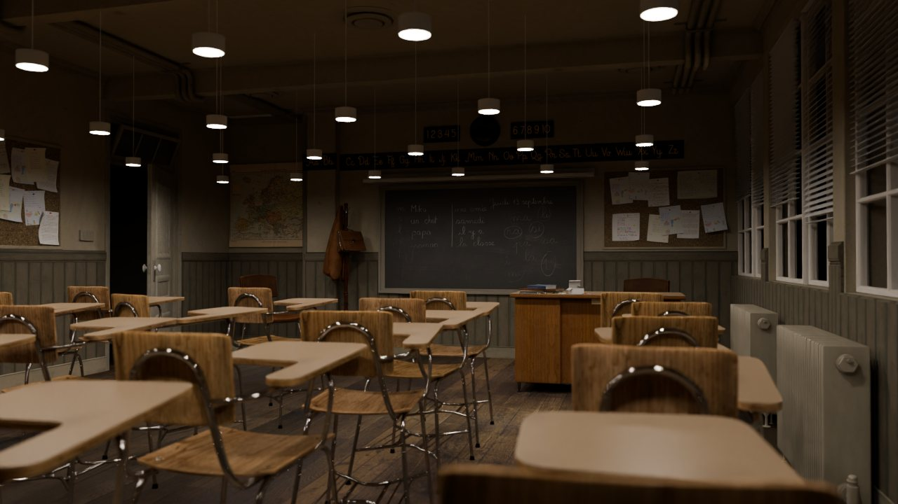
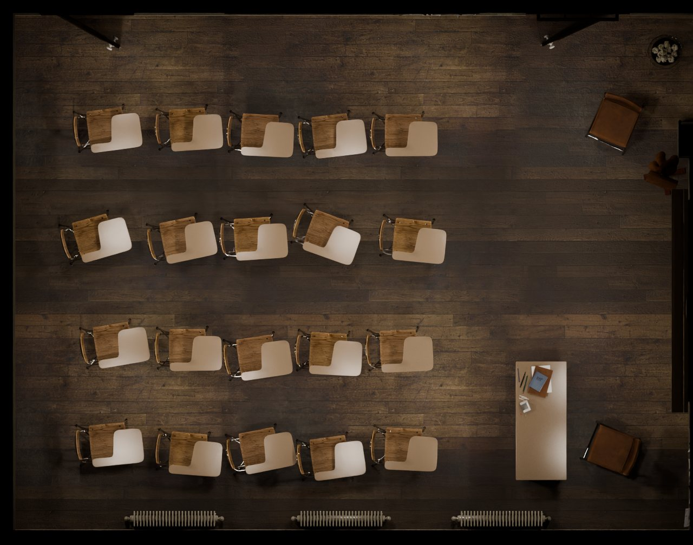

First designs
How long does it take you to turn “warm, calm, not too bright” into lux levels, products and positions?

Validation stage · looking for practitioner feedback
LUMEN searches real products from multiple manufacturers, suggests where to place them, and checks each option against your targets. You review the alternatives and choose what works best for your project.
Rendered in Blender with the luminaires’ photometry · Classroom scene by Christophe Seux (CC0)
The loop every lighting designer knows
And every client change, discontinued product or budget cut sends you round again.
How long does it take you to turn “warm, calm, not too bright” into lux levels, products and positions?
The specified luminaire is gone and the budget just dropped. How much of the scheme do you rebuild?
Existing fittings, ceiling grids and service zones that cannot move. How long until the new products work around them?
We want to learn which of these costs you most, and whether a tool like LUMEN would help.
Why it is hard
A new fitting spreads light differently and breaks the layout; a new layout changes which fitting works, especially in rooms with fixed obstacles. Most tools fix the fitting first and place it on a regular grid, so designers resolve the rest by hand. LUMEN decides both together.
What LUMEN is being built to do
It chooses product, quantity, position and aiming in one search, and respects fixtures and zones that must stay.
A neutral catalogue across brands, using each manufacturer’s measured light data, not generic light sources.
Every option is verified with a second, independent calculation before you see it, against targets set by you and the lighting standard.
How LUMEN would work in practice

Targets for this room
Approved by you
Step 1 · The brief
You supply the brief, room geometry and requirements, including any fixtures or positions that must stay.
Step 2 · Targets
LUMEN proposes technical parameters for the design intentions it supports. You approve them and settle any ambiguities before anything is generated.
Step 3 · Search
It explores products, quantities, positions and orientations together, using real luminaires with manufacturer photometric data.
Step 4 · Options
You receive alternatives with layout, calculated performance and estimated installation cost. Creative direction and final judgement stay with you.
Mock-up of the result screen
Each option with its calculated performance and a true-to-life view. Brief: classroom, 6.0 × 7.7 m, ceiling 2.9 m, at least 300 lx average on the work plane, uniformity at least 0.5.
Brightest
Meets the brief
30 × pendant, 636 lm
Cooper Halo RL706830 · hung at 1.9 m
Mock-up of the planned result screen. Figures are a direct-light calculation for this classroom; “needs review” marks a result within the checker’s margin of a limit. Views are rendered in Blender with each product’s photometry and no daylight, for presentation rather than measurement. Classroom scene by Christophe Seux (CC0).
Where LUMEN stands today
LUMEN is at validation stage. The first prototype will cover room-scale indoor electric lighting, using supplied geometry and a controlled product catalogue. Open-ended brief interpretation, daylight optimisation, whole-building energy assessment and production-level BIM integration are outside that first scope. Technical performance, workflow benefit and commercial terms are still to be developed and evaluated.
Who is building LUMEN
Co-founder · technical lead
PhD in computational design from the Institute of Science and Technology Austria. His research turns design targets into buildable designs under real constraints, including PCBend (SIGGRAPH 2023), 3D LED lighting displays folded from flat circuit boards.
Co-founder · lighting and commercial lead
Vienna-based lighting designer with 8 years’ experience and over 300 projects, from single rooms to entire apartments and houses, across residential, office, and industrial spaces, in new builds and refurbishments.
We are inviting independent lighting designers and small practices to test LUMEN as design partners. Interested? Email us, or spend five minutes answering the questionnaire below on how you handle briefs, initial designs and revisions. We’d love to hear what you think!
If LUMEN feels relevant to your practice, you can also sign a short, non-binding letter of intent. There’s no commitment.
Your answers decide what we build first. Get in touch or start the questionnaire below.
Your answers stay on your device until you choose to email them to us.